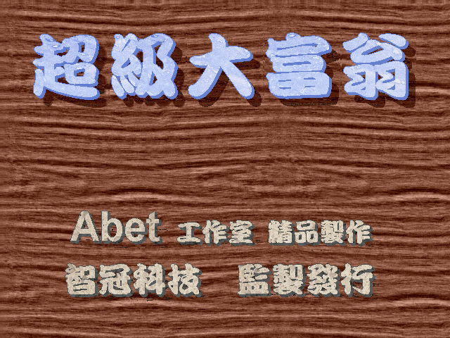
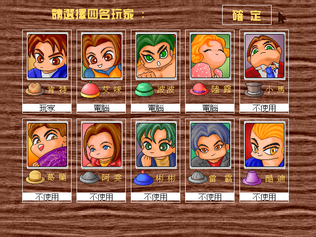
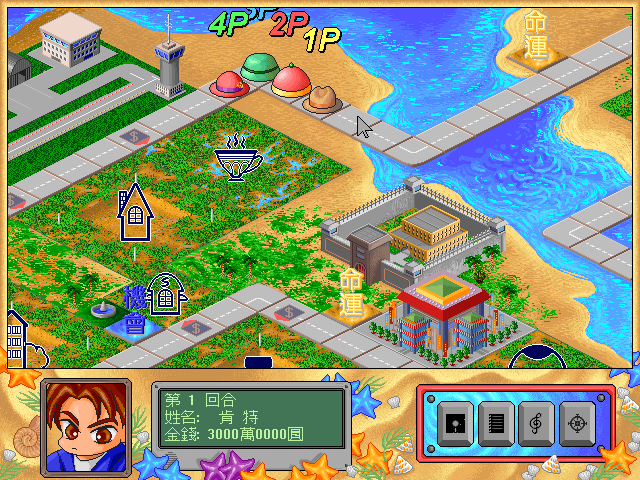

名稱：超級大富翁 (中文版) 簡介：智冠1995年出品的大富翁遊戲 [待補]。


保護：數字密碼，破解碼： SUPER.EXE 9A 5F 12 68 20 3D 01 00 75 03 (密碼不會出現) 90 90 90 90 90 -- -- -- EB -- 備註：DosBox 0.74執行後若會直接跳出（不一定會），請改用其他版的DosBox。 備註：進入遊戲後若人物選擇畫面顯示異常，請更換UNIVBE.EXE或找SVGA.COM替代。 修改：SUPER.EXE 1.輪盤加快 A8 08 74 F8 CB BA -- -- 90 90 -- --